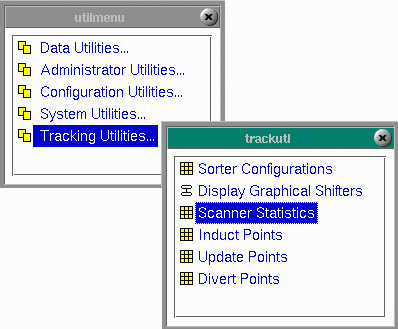

|
Tracking Utilities contains utilities involved in inducting, tracking and diverting product.
The Tracking Utilities control movement of items through sorters.
Tracking is accomplished by use of a shifter table.
The number of shifters available for display depend on your project.
If your project does not require a sorter, you may not have the following menu selections.
|
 |
A shifter divides the conveyor into a number of units called ticks. If the shifter is measuring via an encoder, a tick is a pulse from the encoder. If the shifter is measuring via a timer, a tick is the smallest unit of time used by the timer. The shifter index tracks the cartons or totes using ticks. The size of the shifter index is determined by the number of ticks needed to travel the length of the conveyor piece plus the size of the largest carton or tote.
If a shifter is being used for a piece of conveyor leading to the sorter, the shifter will "dump" its information into the next shifter in the sequence. When the carton or tote reaches the end of the piece of conveyor, its information is dumped to the next conveyor.
The master table is the Sorter table and is available by selecting Sorter Configurations from the Tracking Utilities Menu. Each Sorter requires a designated length represented in the SortBuff table. Each Sorter has a given number of records in the SortData table which represent the product on the sorter. Each Sorter has Inpoints, Updates and Outpoints possible.
Copyright © 2001 Fortna Inc. All rights reserved.